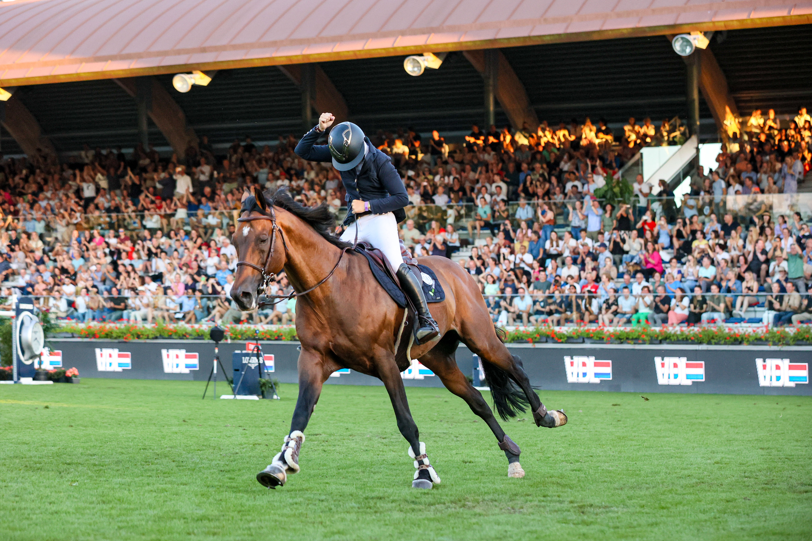

Francia conquista la Copa de las Naciones de La Baule tras nueve años de sequía
El equipo francés se impuso en la Coupe des Nations Barrière en el Jumping International de La Baule, logrando su primera victoria en esta competición desde 2017. A dos meses del Mundial, el triunfo supone un impulso de confianza definitivo para Les Bleus.

Uso editorial
El Stade François André de La Baule vivió este viernes una jornada histórica con el triunfo del equipo francés en la Coupe des Nations Barrière, la prueba estelar del CSIO 5*. Ante 7.500 espectadores que entonaron La Marsellesa al final de la competición, Francia firmó su primera victoria en esta cita desde 2017, apenas dos meses antes del Mundial.
La emoción fue palpable en las celebraciones de Nina Mallevaey (número 7 mundial y mejor jinete femenina del ranking), Olivier Perreau, Julien Épaillard y Antoine Ermann, quienes protagonizaron una remontada de infarto ante la potente selección alemana. Alemania dominó la primera manga sin penalizaciones, pero los franceses —que habían cerrado con solo un punto— mantuvieron la presión en el segundo recorrido diseñado por Grégory Bodo.
El desenlace fue de máximo suspense. Épaillard completó su segundo recorrido sin fallos con Fringan de Vesquerie, poniendo la presión sobre el alemán Richard Vogel y su estrella United Touch S. El germano lo completó limpio hasta el penúltimo obstáculo, donde cuatro penalizaciones sentenciaron la victoria francesa y dejaron a Alemania en segunda posición.
"Ganar aquí, ante esta afición y con esta organización tan excepcional, es fantástico", declaró el chef d'équipe francés Édouard Coupérie. "Todos montaron increíblemente bien. Esta victoria nos da un impulso tremendo de confianza".
Nina Mallevaey, visiblemente emocionada, expresó: "Ganar la Copa de las Naciones en La Baule es un sueño hecho realidad. Escuchar a la grada francesa cantar La Marsellesa me puso la piel de gallina. Me sentí como una niña pequeña con estrellas en los ojos".
Por su parte, Épaillard destacó el momento de forma de Fringan: "El desafío era traerlo en condiciones óptimas. Esta Copa de las Naciones me ha dado información muy valiosa para tenerlo a punto en el momento que realmente importa".
Irlanda, vencedora el año pasado, completó el podio en tercera posición tras una excelente segunda manga con tres recorridos limpios que le permitieron recuperarse de un difícil inicio.
En la jornada del viernes también destacó la victoria del belga Gregory Wathelet en el Premio Hus Reproduction (1.45m velocidad) con Romance van de Padenborre, por delante del sueco Henrik von Eckermann y el saudí Abdulrahman Alrajhi.
Este sábado, el programa incluye el Premio Saur (1.50m con barrage) a las 11:30 horas y el histórico Derby de La Baule – Demeures de Campagne a las 17:15 horas, preludio del gran Rolex Grand Prix del domingo.
Resultados oficiales | Web oficial del evento
— Redacción de Hípica al Día